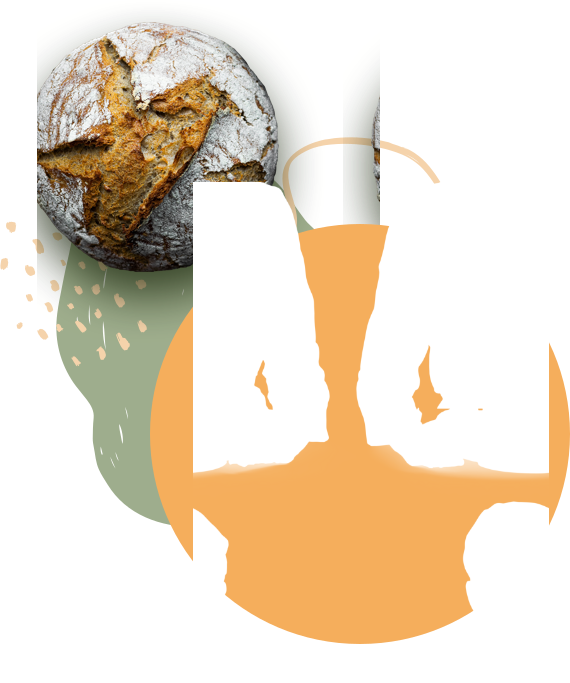

SINCE 1984
Fresh Bakery Every Day
Even the all-powerful Pointing has no control about the blind texts it is an almost.


SINCE 1984
Even the all-powerful Pointing has no control about the blind texts it is an almost.
About Us
She packed her seven versalia, put her initial into the belt and made herself on the way. When she reached the first hills of the Italic.
Our Features
Nothing the copy said could convince her and so it didn’t take long.

Copy Writers ambushed her, made her drunk with Longe and Parole.

And if she hasn’t been rewritten, then they are still using her.
Our Video